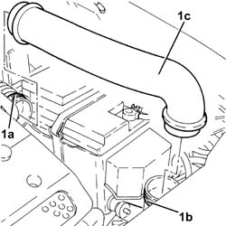

1048A59 PIPE from flow meter to throttle casing hose - R.R.
- Path
- Procedures > 10 ENGINE > 1048 ENGINE AIR SUPPLY CIRCUIT > 1048A vacuum air circuit > 1048A59 PIPE from flow meter to throttle casing hose - R.R.
- Kind
- repair procedure (removal / refitting; the operation number is the code)
- Applies to
- engines: 2.0 JTS, 2.0 JTS; all production periods
- Interactive page
- https://sloeber94.github.io/elrnDB-a156/en/#/3237728
Applies to: engines: 2.0 JTS, 2.0 JTS; all production periods
 Removing
Removing
 Refitting
Refitting1. Loosen the bands (1a) and (1b) and remove the rigid pipe between the air flow meter and the throttle casing hose (1c).

Applies to: engines: 2.0 JTS, 2.0 JTS; all production periods
Refitting
RemovingPlace the rigid pipe between the air flow meter and the throttle casing hose back in its housing and secure it using the bands.
Topics that link to this page (6)
- 1048A10 air cleaner filtering element - replace
- 1048A14 air cleaner filtering element - replace.
- 1048A39 HOSE from air filter to rigid pipe - R.R.
- 1056F09 HOT FILM AIR FLOW METER (flow meter) - R.R.
- 1088D10 lower sleeve for coolant outlet from radiator - r + r
- 1088D14 upper sleeve for coolant inlet to radiator - r + r